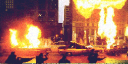
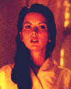
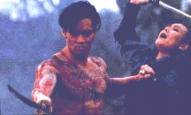
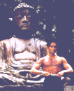

   
| Année | 1996 |
| Pays | France / Japon |
| Réalisation | Christophe GANS |
| Acteurs(trices) | Mark DACASCOS (Yo Hinomura/Freeman), Julie CONDRA (Emu O'Hara), Tcheky KARYO (Inspecteur Netah), Byron MANN (Koh), Yoko SHIMADA (Lady Hanada) |
| Scénario | Christophe GANS & Thierry CAZALS d'après les personnages créés par Kazuo KOIKE & Ryôichi IKEGAMI |
| Montage | David WU |
| Générique | SPARX, Paris (Prix Pixel-INA au festival Imagina 96) |
| Photo | Thomas BURSTYN |
| Musique | Patrick O'HEARN |
| Production | Samuel HADIDA & Brian YUZNA |
| Durée | 100 minutes |